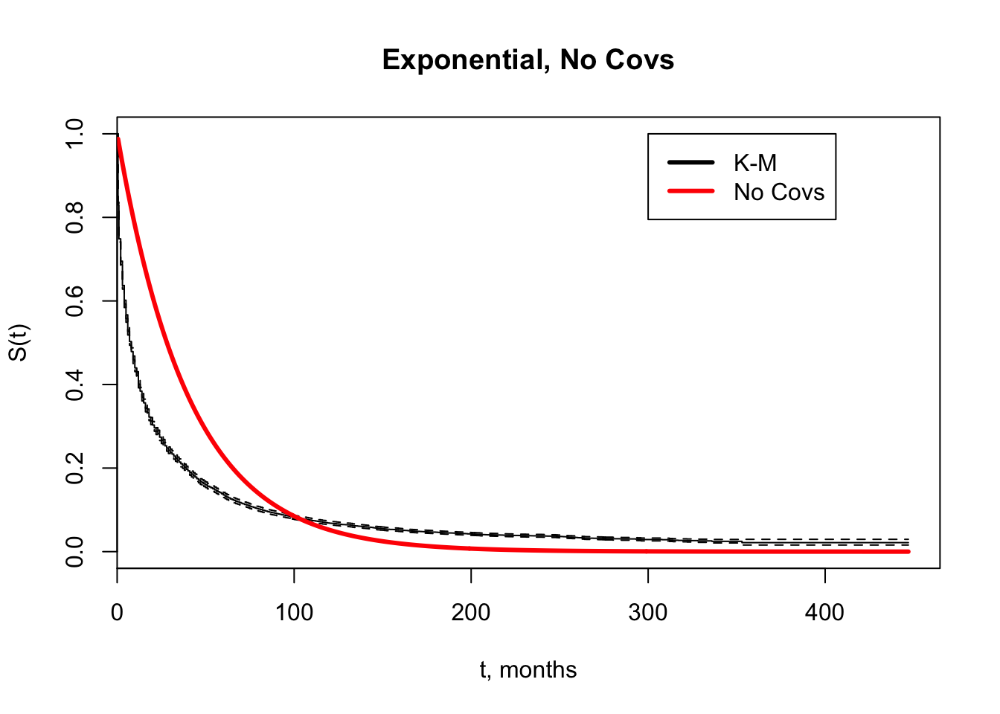
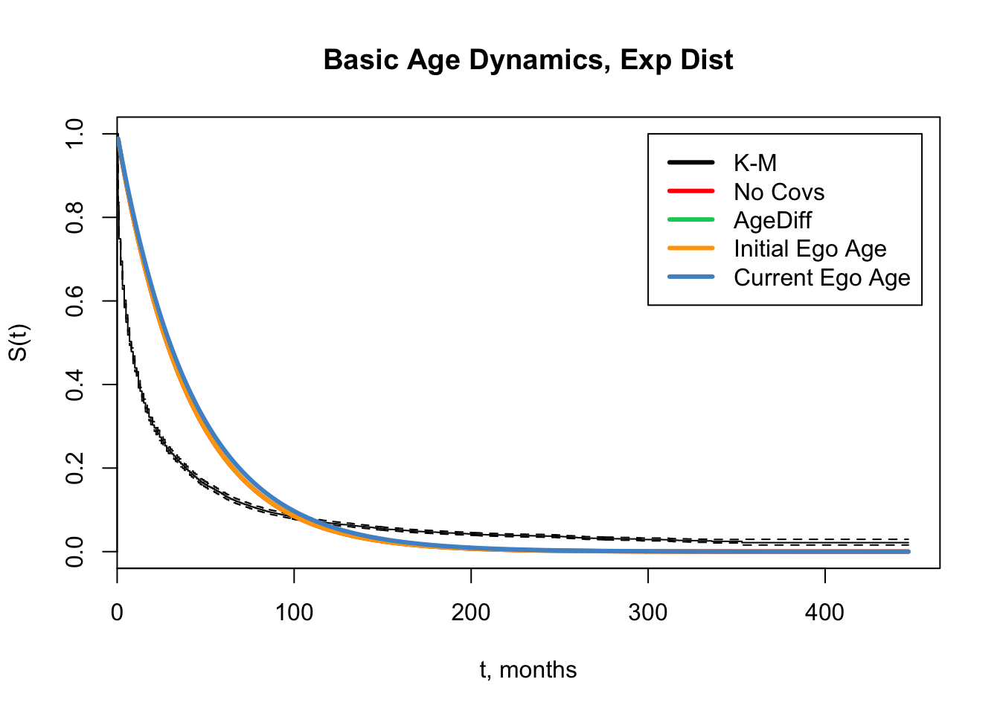
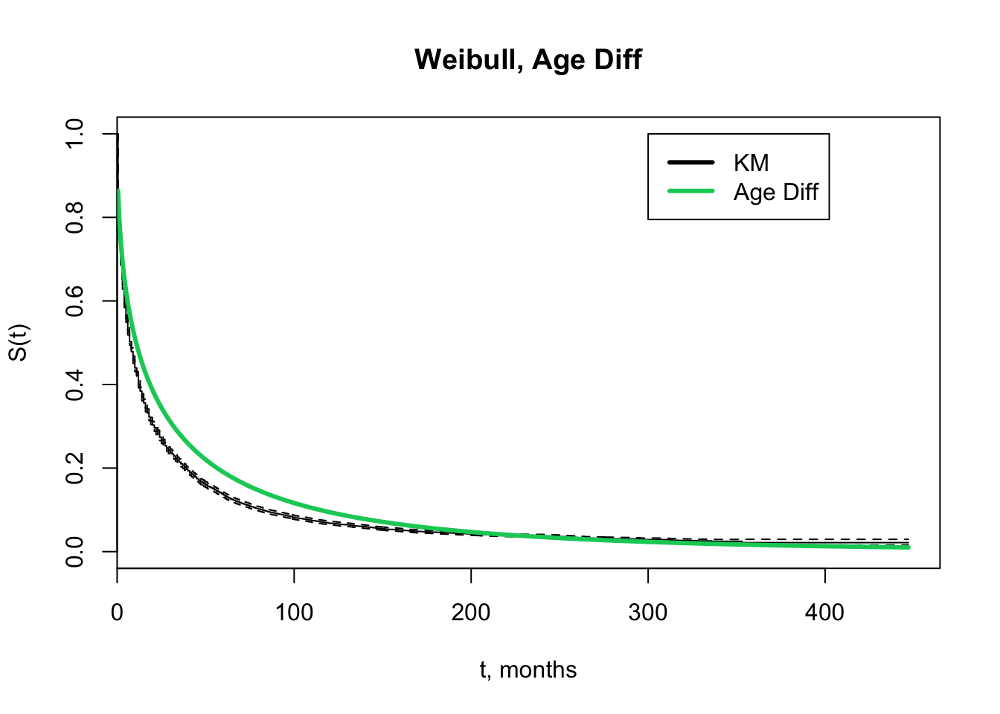
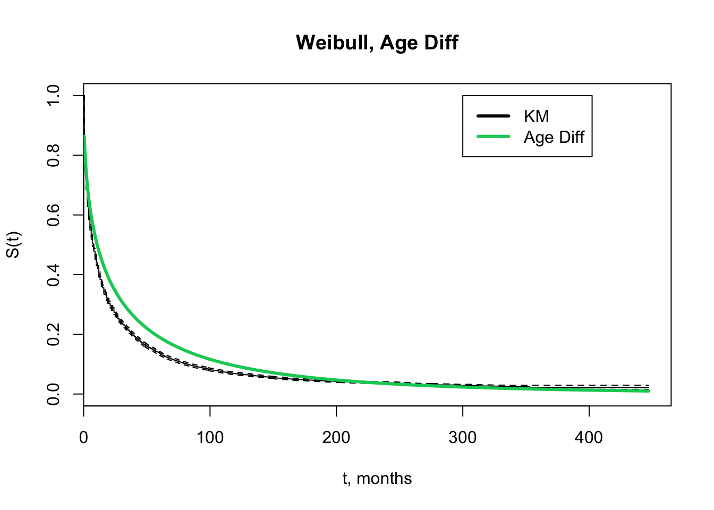

Chapter 5 Parametric Models
5.1 Univariate
5.1.1 Age Category (Current)


5.1.2 Race


5.1.3 Rel Type


5.1.4 Network
Similar to above, but split into marcoh and other - two of the networks we often split out 

5.1.5 Partners in Last Year
Note: this was also run with “osnpyr” and “maxospyr” with very little differences (not shown)


5.1.6 Momentary Degree


5.1.7 AIC Comparison
| Model | Exp Dist | Weibull |
|---|---|---|
| No Covs | 7.756213110^{8} | 6.786521810^{8} |
| Age Category | 7.370552710^{8} | 6.725017810^{8} |
| Race | 7.737999210^{8} | 6.7809510^{8} |
| Rel Type - 3 | 6.331587610^{8} | 6.1316810^{8} |
| Rel Type - 2 | 6.506196510^{8} | 6.261506910^{8} |
| Parts in Last Year | 6.511584510^{8} | 6.177360710^{8} |
| Momentary Degree | 6.668315410^{8} | 6.127564910^{8} |
5.2 Multivariate
these plots are messy
5.2.1 Age Cat + Race


5.2.2 AgeCat + Rel Type


5.2.3 Race + Rel Type


5.2.4 Age Cat + Partners in Last Year


5.2.5 Race + Partners in Last Year


5.2.6 Age Cat + Momentary Degree


5.2.7 Race + Momentary Degree


5.2.8 Rel Type + Parts Last Year


5.2.9 Model Comparison
| Model | Exp Dist | Weibull |
|---|---|---|
| No Covs | 7.756213110^{8} | 6.786521810^{8} |
| Age Cat + Race | 7.361256510^{8} | 6.720240310^{8} |
| Age Cat + Rel Type | 6.317939910^{8} | 6.129736610^{8} |
| Race + Rel Type | 6.325003710^{8} | 6.129459610^{8} |
| Age Cat + PartsLstYear | 6.430247410^{8} | 6.153737810^{8} |
| Race + PartsLastYear | 6.508537510^{8} | 6.17670510^{8} |
| Age Cat + Degree | 6.491474810^{8} | 6.104343110^{8} |
| Race + Degree | 6.686300610^{8} | 6.12263810^{8} |
| Rel Type + PartsLstYear | 6.037482310^{8} | 5.884356710^{8} |
5.2.10 Other Age Vars
that don’t tell us much




 



5.3 Thoughts & Discussions
- age is not responsible for the initial steep drop-off
- exp mixture models & weibulls fit better because there is failty endogenous to the relationships
- weibull isn’t masking the effect of age
- has anybody demonstrated a crosswalk between a exponential mixture and a weibull?
- theory: why doesn’t age have a larger effect?
- age / period / cohort effects - what would we expect?
Age’s effects on relationship duration are complex
- Relationship age at time of interview usually lower for younger people, but due to a combination of ‘churn’ and not being alive long enough to have had decades-long relationships. - Age difference between ego and alter matters, but affect of age difference is likely to vary across the life course. - The effect age of age difference on relationship duration may be different depending on if the male or female is the older partner. - Which age is most important for relationship persistence? Age at beginning of relationship, or current age? - Whose age to model? Ego age? Partner age? Ego age and age difference?
Dyadic Complications
- Relationship duration is unlikely to be independent of other relationships each partner may be participating in. - Is there a way to represent this in a parametric regression model, and if not, what are the consequences of assuming independence between relationships?
Likely other complications.